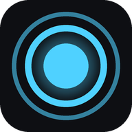

Sound Artz
原曲の熱を保ったまま、自分の色に染め上げる。
2010年から鳴らし続けているリミキサー・トラックメーカー。
Bootleg remixes, originals & self-built VST3 tools.
Profile
ブートレグ・リミックスを主戦場に、オリジナル制作と自作エフェクター開発もやっています。
2010年から活動している、Hands Up / Dancecore系のリミキサー・トラックメーカー。ハンズアップ一本で16年作り続けている変人です。本場ドイツのTechnoBase.FMのコンピレーションに楽曲提供、SEGAの音楽ゲームmaimaiにも楽曲提供実績があります。
最近はFL Studio用のエフェクトVST3プラグインも自作していて、鳴らす側だけでなく作る側からも音作りを追求中。第1弾の自作エフェクターEnvFilterをGitHubで無料公開中で、ほかのエフェクターも開発しています。
Find Sound Artz
楽曲・映像・ツールはそれぞれのプラットフォームで公開しています。
SoundCloud →
リミックス・オリジナル楽曲を配信
YouTube →
リミックス動画・DL版アップロード
X (Twitter) →
制作の裏側・新曲情報
GitHub →
自作VST3プラグインを無料配布
BOOTH →
MV作成ツールなど自作ツールを配布
【maimaiでらっくす】Sound Artz - Party☆People☆Princess
Latest Releases
SoundCloudの最新トラックをそのまま表示しています(自動更新)。
Self-Built VST3
FL Studio用に自作しているエフェクトプラグイン群。無料でソースごと公開しています。
BitCrush
ビット数/サンプルレート低下・ディザ・ドライブ&トーンを備えたビットクラッシャー。Raw/Clean/Warmの質感切替つき。
MultiFX
Filter / BitCrush / Distortion / Modulation / Trem-Gateをドラッグで並べ替えできるチェーン型マルチエフェクター。
Web Tools
ブラウザだけで動く自作ツール。インストール不要・無料で使えます。

CoverPulse
サムネ画像と曲を入れるだけで、音に合わせて動くMVを作れるツール。キックに反応する揺れ・フラッシュ、円形スペクトラムやネオンの波など、テンプレートを選ぶだけで1920×1080のMP4を書き出せます。画像・曲はブラウザの中だけで処理され、外部に送信されません。